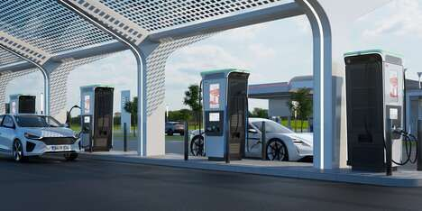

Kolkata Charging Stations
There are 75 EV charging stations in kolkata to charge your electric car. Find out the address, contact details and directions of an EV charging station near you below. You may also find out which charging station offers fast charging facility and if it’s compatible with CCS/CHAdeMO standards. Also, check out Top Electric cars in India which are available for sale.
You can find out your nearby charging station -
Slot - 1 Charging Stations
- Sector 3 Rohini Near NDPL Shakti Deep Building
Timing 10:00:00 - 21:00:00
- Plot no. 1-A, Shiv vihar, Nangloi
Timing 10:00:00 - 21:00:00
- 9/17, Near Chajju Gate, east babarpur, Shahdara
Timing 06:00:00 - 21:00:00
- E-473, New Ashok Nagar
Timing 09:00:00 - 21:00:00
Slot - 2 Charging Stations
- Kalindi kunj Road Jaitpur
No. of connectors 1
Timing 13:00:00 - 21:00:00
- N118/R6, Wazirpur Village Ashok Vihar Phase 1
No. of connectors 1
Timing 14:00:00 - 21:00:00
- sector 14 rohini
No. of connectors 1
Timing 13:00:00 - 21:00:00
- 2466 roshnara road subzi mandi delhi
No. of connectors 1
Timing 24 hours
Slot - 3 Charging Stations
- 175, Patparganj Industrial Area, Patparganj
No. of connectors 2
Timing 08:00:00 - 21:00:00
- B-50/9, Haruan Basti, Kondli
No. of connectors 1
Timing 07:00:00 - 21:00:00
- Plot No Musddi Chowk, Sarai Kale Khan Hazrat Nizamuddin
No. of connectors 1
Timing 11:00:00 - 21:00:00
- H.no. 16, Gali no 2, Jagat Puri
No. of connectors 1
Timing 12:00:00 - 21:00:00
Slot - 4 Charging Stations
- M block Market Gearter Kailash 1
No. of connectors 1
Timing 13:00:00 - 21:00:00
- 237, New Seelampur Shahdara
No. of connectors 1
Timing 14:00:00 - 21:00:00
- Opp. Karbala, Mochi park, mayur Vihar 1, Pocket 2, Kotla Village
No. of connectors 1
Timing 04:00:00 - 21:00:00
- RZG-45, 50 ft road, Nihal Vihar, Nangloi
No. of connectors 1
Timing 16:00:00 - 21:00:00
Click HereTo know more about Kolkata Carging staions